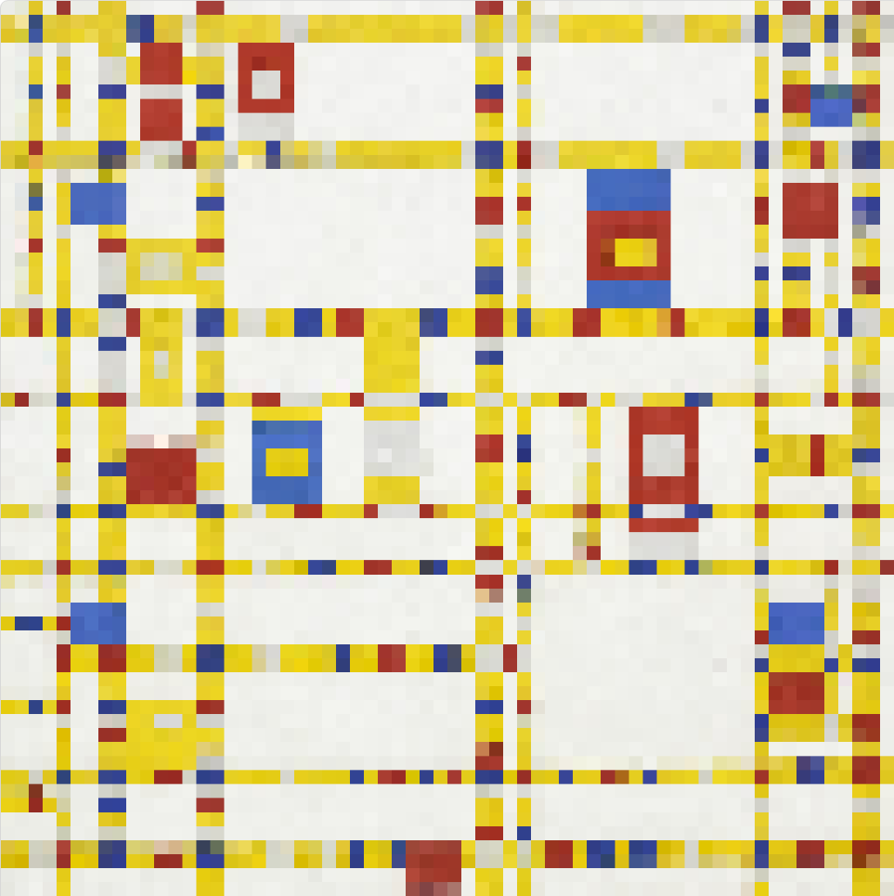

Yuanlong Sun
Bridging UX/UI Design, Strategic Project Management, and Creative Technology.
Professional Statement
As a multidisciplinary designer transitioning into the professional sphere, my intended field of practice lies at the intersection of UX/UI design, strategic project management, and creative technology. I am actively seeking roles such as Junior UX Designer, Strategic Design Coordinator, or Creative Technologist.
The primary audience for this portfolio includes design recruiters, UX studio leads, and business owners looking for adaptable talent. These professionals are often time-poor and highly analytical; they review dozens of portfolios a week and look beyond mere aesthetics. They want to see how a designer thinks, how they solve complex problems, and how they function within a team.
Therefore, this portfolio is intentionally structured to prioritize clarity, logic, and measurable impact. Recruiters and design leads need to know that I am not just a visual creator, but a strategic thinker who understands business constraints. By highlighting my exact roles—such as managing an $80,000 budget in a group setting or developing end-to-end wireflows for complex systems like airline luggage tracking—I am speaking directly to their need for reliability and strategic foresight. They are looking for a designer who can bridge the gap between creative ideation and practical execution, ensuring that projects are delivered on time and within budget.
Selected Works
1. Western Sydney Urban Heat Resilience (Work In Progress)
| Situation | Vulnerable communities in Western Sydney face severe environmental risks due to the urban heat island effect, requiring a comprehensive, financially viable design intervention. |
| Task | Within our group project, my objective was to ensure our strategic design proposal was financially grounded, logistically structured, and capable of execution within strict constraints. |
| Action | I oversaw the $80,000 project budget with precise cost accounting. I established strict project milestones, formulated a comprehensive timeline, and coordinated optimal resource allocation. |
| Result | By tightly managing operational constraints, I ensured the project remained on track for on-time delivery, reinforcing my understanding that social design must be supported by rigorous financial planning. |
2. Air Travel Luggage Management Tablet App

| Situation | Air travel frequently involves stressful and chaotic luggage management for both passengers and airline staff, leading to inefficiencies. |
| Task | The goal was to design an intuitive tablet interface that simplifies the luggage tracking and management process, reducing cognitive load for users. |
| Action | I executed the end-to-end UI/UX process, from detailed wireframes to map out user journeys, translating this foundation into a polished, high-fidelity interactive prototype. |
| Result | The application streamlined the tracking process, resulting in an accessible digital product. This sharpened my ability to design complex interfaces for high-stress environments. |
3. Stylized Visual & Motion Design

| Situation | In the modern digital landscape, capturing user attention requires dynamic, engaging, and highly stylized visual storytelling. |
| Task | I aimed to elevate digital content by integrating complex visual effects and rhythmic motion graphics into a cohesive video narrative. |
| Action | Utilizing Adobe After Effects, I conceptualized a stylized sequence, applying advanced video effects, precise masking, and dynamic editing to align visuals with the content's pacing. |
| Result | The final video successfully delivered a high-impact visual communication piece, refining my post-production skills and demonstrating how motion design enhances user engagement. |
4. Creative Coding Major Project

| Situation | Exploring the intersection of coding and design opens up avenues for interactive, generative digital experiences that traditional tools cannot achieve. |
| Task | The objective was to develop a creative coding application utilizing programming logic to generate dynamic visual art and responsive interactive elements. |
| Action | I wrote custom algorithms to generate complex patterns, structured the codebase logically, and ensured interactive elements responded smoothly to user inputs while debugging the system. |
| Result | This project successfully bridged technical development and aesthetic design, demonstrating my ability to use code as a creative medium to build programmatic user experiences. |